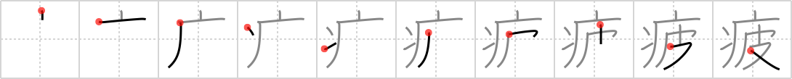

疲
← →
tired

Reading:
On-Yomi: ヒ — Kun-Yomi: つか.れる、-づか.れ、つか.らす
Heisig story:
Sickness . . . pelt.
Koohii stories:
1) [akrodha] 30-5-2007(208): I picture an exhausted sick caveman snuggling up in a comfy pelt blanket.
2) [inuki] 12-10-2006(97): Your body feels tired when you have a sickness. All you want to do is wrap yourself up in a nice warm pelt and get better.
3) [dingomick] 9-4-2007(34): Caveman was tired after hauling mammoth pelts all day.
4) [lifeflaw] 2-4-2009(29): Being tired is a simple sickness that can treated by covering oneself with a pelt and resting well! (Thanks inuki).
5) [atarakushi] 22-6-2010(12): I'm sick and tired of all these motherf~~ing pelts in all these motherf~~ing kanji.